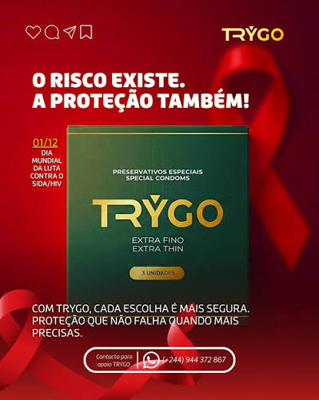

A marca
A TRYGO
A TRYGO nasceu com uma ideia simples: aproximar proteção, informação e uma linguagem que faça sentido para as pessoas de hoje.
Uma marca simples naquilo que diz. Cuidadosa naquilo que entrega.

Nossa visão
Construir uma marca em que as pessoas possam confiar.
Nossa missão
Promover escolhas mais seguras através de produtos e informação clara.
Os nossos princípios
O que nos guia.
- 01
Segurança
Porque proteção vem primeiro.
- 02
Clareza
Informação sem complicação.
- 03
Conforto
Porque segurança também deve ser confortável.
- 04
Confiança
Uma marca que respeita as pessoas.

Campanha
O risco existe. A proteção também.
No Dia Mundial da Luta contra a SIDA/HIV, a TRYGO lembra que informação e proteção fazem parte das escolhas de cada pessoa.
1 de dezembroGlossário
Palavras simples.
- Validade
- A data impressa na embalagem. Depois dela, o produto não deve ser usado.
- Reservatório
- A pequena ponta do preservativo. Aperta-se ao colocar, para não ficar ar lá dentro.
- Lubrificante
- Produto que reduz o atrito. Com látex, só os de base água ou silicone.
- Látex
- Borracha natural, o material mais comum nos preservativos. Quem tem alergia deve procurar alternativas.
- Extra fino
- Nome de uma referência da linha (Extra Thin). Os detalhes técnicos estão na embalagem.
Cuidar de si
Quando procurar um serviço de saúde.
Um profissional de saúde pode orientar, testar e tratar. Quanto mais cedo, melhor: alguns cuidados têm prazos.
- O preservativo rompeu ou escorregouNão espere para ver se corre bem.
- Tem dúvidas sobre uma possível exposição a infeçõesFalar cedo dá mais opções.
- Tem sintomas que não reconheceNão se automedique.
Informação